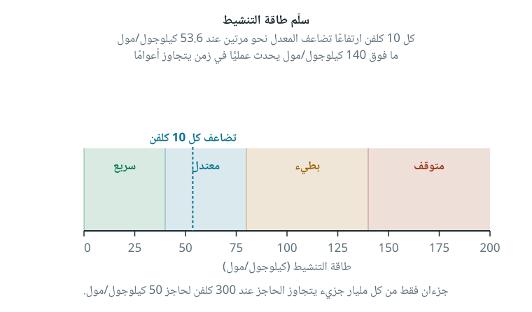

طاقة التنشيط
Activation Energy
الحاجز الطاقي الأدنى الذي يجب أن يمتلكه التصادم لتحويل المتفاعلات إلى نواتج، وتظهر في ميل العلاقة بين لوغاريتم ثابت المعدل ومقلوب الحرارة.
طاقة التنشيط E_a هي أصغر طاقة نسبية يجب أن يحملها تصادم جزيئين ليعبرا إلى حالة النواتج. ليست خاصية للمتفاعلات وحدها، بل للحاجز الواقع بين المتفاعلات والنواتج على مسار التفاعل، ولذلك تتغيّر إذا تغيّر المسار ولو بقيت المتفاعلات والنواتج كما هي.
تُستخرج من القياس عبر معادلة أرهينيوس: k = A·exp(−E_a/(R·T))، حيث A معامل يعبّر عن عدد التصادمات واتجاهاتها. بأخذ اللوغاريتم: ln k = ln A − E_a/(R·T)، فالخط المستقيم بين ln k و1/T ميله −E_a/R. هذا الخط هو أداة التحقق المعتادة: إذا انحنى الخط في مدى حراري واسع فالنموذج لا يكفي.
تفصّل نظرية التصادم معنى الرقم: الجزيئات لا تملك طاقة واحدة، بل توزيعًا إحصائيًّا يمتدّ ذيلًا نحو الطاقات العالية، ونسبة من تتجاوز E_a هي مساحة ذلك الذيل. لهذا يكون أثر الحرارة أسّيًّا لا خطيًّا، ولهذا تصنع فروق الحرارة الصغيرة في المصانع فروقًا كبيرة في الزمن.
الآلية
كيف يحدث الأمر على مستوى الجسيمات أو المتغيّرات المباشرة
تُصوَّر الطاقة الكامنة للنظام على طول إحداثي التفاعل: ترتفع من مستوى المتفاعلات إلى قمة تسمّى الحالة الانتقالية ثم تهبط إلى مستوى النواتج. الفرق بين قمة الحاجز ومستوى المتفاعلات هو طاقة التنشيط. عند القمة تكون الروابط القديمة قد أُضعفت والجديدة لم تكتمل، فالبنية غير مستقرة ولا توجد إلا للحظات. الجزيئات التي لا تبلغ القمة ترتدّ إلى الخلف، فالتصادم غير الفعّال ليس فشلًا في التصادم بل نقص في الطاقة؛ وهذا يفسّر لماذا لا تُنتج كل التصادمات تفاعلًا ولو كان التصادم الهندسي مناسبًا.
الأرقام والوحدات
العلاقات والوحدات والنطاقات العددية التي تسند الشرح
نسبة الجزيئات التي تملك طاقة تساوي E_a أو تزيد عليها تُقدَّر بـ exp(−E_a/(R·T)). عند E_a = 50 kJ/mol و300 K تكون النسبة 1.97×10⁻⁹، وعند 310 K تصبح 3.76×10⁻⁹، أي 1.91 مرة، مع أن النسبة بين الطاقتين الحراريتين لم تتغيّر إلا 3%. وإذا كان k = 1.0×10⁻³ s⁻¹ فإن المعامل الأُسّي A = 5.1×10⁵ s⁻¹. تُستخرج E_a من نقطتين أيضًا: E_a = −R·d(ln k)/d(1/T)، ومن القيمتين السابقتين يعطي الميل 50.0 kJ/mol، وهو تحقق دائري مقصود من الحساب نفسه.
الفرق الدقيق
المفهوم الملتبس الذي يُخلَط به، وأين ينفصلان
الخلط الأول مساواة طاقة التنشيط بحرارة التفاعل ΔH: الأولى حاجز حركي يُقطع ثم يُسترد جزئيًّا، والثانية فرق بين مستويَي الطاقة الابتدائي والنهائي. التفاعل الناشر للحرارة يمكن أن يكون بطيئًا جدًّا إذا كان حاجزه عاليًا، والتفاعل الماصّ يمكن أن يكون سريعًا. الثاني مساواتها بالطاقة الحرة للتنشيط ΔG‡: تلك تشمل الإنتروبيا ولذلك تصف معدلًا، بينما E_a تصف اعتماد المعدل على الحرارة. الثالث ظنّ أن الطاقة تُضاف إلى كل جزيء: الجزيئات لا تتلقى E_a من مصدر خارجي، بل يوزّع التصادم الطاقة على عدد قليل منها في لحظة قصيرة.
حدود التعريف
أين ينكسر التعريف أو النموذج وما الذي لا يفسّره
تفترض أرهينيوس أن E_a وA ثابتان في المدى المقيس؛ وهذا يفشل في مدى حراري واسع حيث تنحني العلاقة، ويفشل عند درجات منخفضة جدًّا حيث يصبح النفق الكمومي لانتقال الهيدروجين ممرًّا بديلًا يتجاوز الحاجز. كما تفشل في تفاعلات لها طاقة تنشيط ظاهرية سالبة، وهي حالات تتشكّل فيها وسائط مستقرة بانخفاض الحرارة. وفي التفاعلات المحدودة بالانتشار لا تمثّل E_a حاجزًا جزيئيًّا بل طاقة لزوجة الوسط. وأخيرًا، في التفاعلات غير المتجانسة تُقاس E_a ظاهرية تخلط بين حاجز السطح ومقاومة انتقال الكتلة.

| الكمية | القيمة | المصدر |
|---|---|---|
| نسبة الجزيئات التي تتجاوز E_a = 50 kJ/mol عند 300 K | 1.97×10⁻⁹ نسبة بلا وحدة | [1] |
| النسبة نفسها عند 310 K | 3.76×10⁻⁹ نسبة بلا وحدة | [1] |
| المعامل الأُسّي A عند k = 1.0×10⁻³ s⁻¹ | 5.1×10⁵ لكل ثانية | [2] |
| طاقة التنشيط المستخرجة من ميل ln k مقابل 1/T | 50.0 كيلوجول/مول | [2] |
المصادر
- 1 Chemistry 2e — 12.5 Collision Theory — OpenStax, Rice University. openstax.org/books/chemistry-2e/pages/12-5-collision-theory · اطُّلع عليه 2026-11-16
- 2 CODATA Value: molar gas constant — NIST, Fundamental Physical Constants. physics.nist.gov/cgi-bin/cuu/Value?r · اطُّلع عليه 2026-11-16
- 3 Chemistry 2e — 12.7 Catalysis — OpenStax, Rice University. openstax.org/books/chemistry-2e/pages/12-7-catalysis · اطُّلع عليه 2026-11-16
استشهد بهذا المصطلح
الصيغتان مبنيتان من بيانات الصفحة نفسها: العنوان والتاريخ ورابط النسخة المنشورة.
طاقة التنشيط — Activation Energy. (2026). ديوان المعرفة — انفراد. https://infiradev.com/diwan/terms/activation-energy.html
@misc{activation-energy2026,
title = {طاقة التنشيط},
titleaddon = {Activation Energy},
howpublished = {{ديوان المعرفة — انفراد} — مرجع علمي عربي},
year = {2026},
url = {https://infiradev.com/diwan/terms/activation-energy.html},
urldate = {2026-11-16},
note = {مراجعة علمية: مراجعة آلية — ديوان المعرفة (روابط المصادر + عقد المحتوى + وجود الرسم) 2026-11-16}
}
راجعه: مراجعة آلية — ديوان المعرفة (روابط المصادر + عقد المحتوى + وجود الرسم) 2026-11-16 · 2026-11-16 · آخر تحديث 2026-11-16